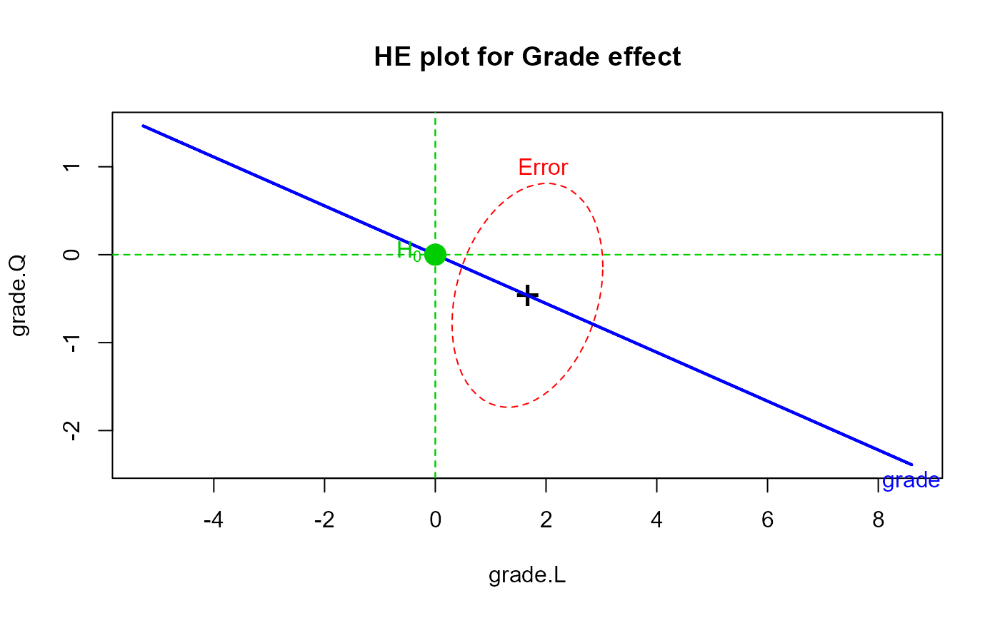

A utility function to draw and label a point in a 2D (or 3D) HE plot corresponding to a point null hypothesis being tested. This is most useful for repeated measure designs where null hypotheses for within-S effects often correspond to (0,0).
Arguments
- x
Horizontal coordinate for H0
- y
Vertical coordinate for H0
- z
z coordinate for H0. If not NULL, the function assumes that a
heplot3dplot has been drawn.- label
Text used to label the point. Defaults to
expression(H[0])in 2D plots.- cex
Point and text size. For 3D plots, the function uses
size=5*cexin a call topoints3d.- pch
Plot character. Ignored for 3D plots.
- col
Color for text, character and lines
- lty
Line type for vertical and horizontal reference lines. Not drawn if
lty=0.- pos
Position of text. Ignored for 3D plots
Examples
Vocab.mod <- lm(cbind(grade8,grade9,grade10,grade11) ~ 1, data=VocabGrowth)
idata <-data.frame(grade=ordered(8:11))
heplot(Vocab.mod, type="III", idata=idata, idesign=~grade, iterm="grade",
main="HE plot for Grade effect")
mark.H0()
